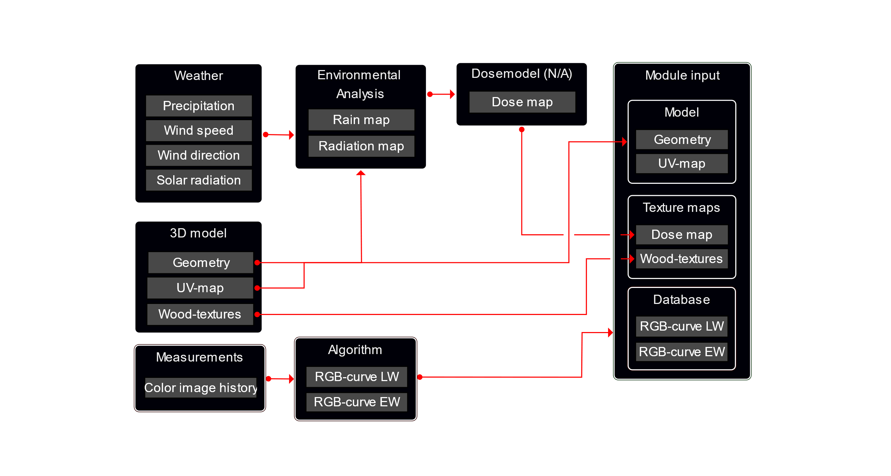

Figure 1
Each item is an array of size 365x551 representing the hourly weather variables from 551 different sites over one standard year in Europe. The dataset was obtained via the Meteonorm software1. The standard year can be regarded as a hypothetical average year and does not represent actual measurements.
The temperature, relative humidity and precipitation were used to estimate daily average moisture content variation whereas precipitation, wind direction and wind speed were used to characterize wind-driven rain.
Inputs of temperature, relative humidity and precipitation are used to calculate the moisture content variation of a sheltered and exposed board, respectively. Each output item (exposed board/sheltered board) is an array of 365x551 representing the daily average moisture content variation at each of the 551 locations. The moisture content was calculated with a numerical model described in detail by Niklewski and Fredriksson2.
For each location, the model was run twice. In the first run, precipitation, temperature, and relative humidity were used as input and it was assumed that one face of the board became wet during rain events. The resulting dataset is referred to as the moisture variation of the exposed board and are described in more detail by Niekerk et al3. In the second run, precipitation was instead neglected, and the resulting dataset is thus referred to as the moisture variation of the sheltered board.
Inputs of moisture content (exposed board), precipitation and temperature are used to calculate the moisture content of five different details through use of an empirical model. The model has two parameters describing the mode/rate of water absorption and the level of ventilation to facilitate drying, respectively. The former was selected to describe end-grain absorption and side-grain absorption, respectively, and the latter was selected to describe no ventilation and limited ventilation, respectively. This results in a total of 4 details. The fifth type (free end-grain) was described by end-grain absorption and excellent ventilation. The output is an array of 365x551x6 representing the daily average moisture content variation at each of the 551 locations in six different configurations including the horizontal board. The model and details are described in detail by Niklewski et al4.
Figure 2. The 6 different details included.
Inputs of moisture content and temperature are used to calculate dose. The output is an array of 6x551x7 representing the cumulative dose over one standard year in six different details and the sheltered case. A general description of modelling fungal decay through dose models is given by Isaksson et al5. Note that there are several different dose models available, however here the simplified logistic model was used. The motivation is that the logistic model, while being sounder from a physiological perspective, is not compatible with the factorized approach. A discussion between the logistic and simplified logistic models are given by Niklewski et al4.
Inputs of precipitation, wind direction and wind speed were used to estimate driving rain in different directions. Driving rain was calculated as follows:
Rwdr = 0.222 * U * Rh * cos (θ)
where Rwdr (mm/h) is driving rain, U (m/s) is the wind speed, Rh [mm/h] is the rain passing through a horizontal plane and θ is the angle between the normal of the wall surface and the wind direction. The model is described in detail by Blocken and Carmeliet6.
For each location, driving rain on vertical surfaces was calculated for wall directions between 0 and 359 degrees, with an interval of 1 degree. The maximum cumulative driving rain for any orientation was then divided by the to get the exposure to rain relative to the total rain passing through a horizontal surface.
Figure 3
Horizontal surfaces which are protected by roof structures can be considered sheltered when the wind direction is favourable. As an example, consider that the deck illustrated in Figure x is facing south. In this case, the deck can be considered fully sheltered for wind directions of S ± 90 degrees. For other wind directions, the outermost edge of the deck is fully exposed to precipitation. The exposure to rain in this point relative to the total rain passing through a horizontal surface was calculated, again considering the most adverse orientation.
Figure 4
Each output item consists of an array of size 551x1 with relative exposure to driving rain on horizontal surfaces with roof and vertical surfaces, respectively.
Material performance indicators were obtained from a mix of laboratory and field trials7. Material properties include both a variety of relative moisture dynamics (e.g. long term absorption) and relative natural resistance to fungal decay.
A resistance model8 was used to derive in-ground and above-ground relative resistance from the material performance indicators.
Data from the SMAP database were used to derive surface water holding capacity, soil moisture content and surface temperature. SMAP provides gridded surface data with a spatial resolution of 9x9 km2. An equidistant grid covering Europe and northern Africa were analysed, including a total of 4814 points.
Inputs of surface water holding capacity, soil moisture content and surface temperature were used to calculate the exposure dose. A dose is a unitless measure describing the daily rate of fungal development between 0 (unsuitable) and 1 (ideal). The dose is calculated by multiplication of the moisture- and temperature-induced dose. The moisture-induced dose is calculated as a function of water holding capacity and soil moisture content and the temperature-induced dose is calculated from the surface temperature. The model is described in detail by Marais et al9,10
Figure 5
Three different climates, including contemporary and two future climate scenarios, were used to a model the regional risk of termites. The dataset was obtained via the Meteonorm software11. The contemporary dataset includes 551 locations scattered over Europe. The standard year can be regarded as a hypothetical average year and does not represent actual measurements.
The natural occurrence of termites was determined through Defaut’s system of photoclimatic stages (DSPS). Based on variations in temperature and precipitation, each climate was assigned a temperature class, aridity/humidity category and continentality. It was then assumed that the natural occurrence of termites is limited to semi-arid, sub-humid or temperate sub-xeric climates with an average temperature of the coldest month above 2.5°C. The climate categorization in conjunction with the criterion for natural occurrence results in a binary dataset of favourable and unfavourable coordinates. This dataset was then interpolated to obtain the maps of termite risk. More details are given by Niekerk et al12.

Figure 6.
Figure 1 shows the concept used to simulate appearance changes of wood caused by environmental effects. The kinetic and/or intensity of such changes depends on structure and architectural design (3D model), location (weather), microclimate (environmental analysis), and the materials used for construction (measurements and database). The relationship linking the various factors to kinetics is the dose model. The dose model returns the degree of discoloration in different nodes on the building envelope and the material database holds species-specific relationships between colour and degree of discoloration. This section provides a proof-of-concept protocol for integrating the material database with environmental analysis to visualize the colour change of wood.
The most important weather variables include precipitation, wind speed, wind direction and solar radiation. The former three are needed to calculate the exposure to driving rain.
Geometry is information describing the position of vertices and how they connect to form lines and faces and objects. A vertex is a single point in space, defined by its x, y and z-coordinate. Two vertices can be joined to a line, and a minimum of three lines can be joined to a face (surface). An object can consist of multiple surfaces. For example, a box is made up of 8 vertices, 12 lines and 6 faces. A 3D model can include multiple objects. Figure 1a shows a basic 3d model.
The material determine how object surfaces will be rendered. Real materials are often visualized by projecting an image of a real material onto the surface of the object. To project a flat image to an object consisting of several surfaces facing in different directions (normal), then the object needs to be unwrapped, or unfolded, onto a 2D plane. This process is called UV-mapping. Figure 1b shows the unwrapped surfaces of the basic 3D model. A flat texture can then be mapped to match the UV-map, whereafter the 3D-shape is reassembled.
Figure 7. A basic 3D geometry (left) with its wall-surfaces unwrapped onto a flat surface (right).
As an alternative to image textures, procedural material textures can be generated from algorithms. Like vector-based graphics, procedural textures are defined by mathematics and the resolution is only limited by the resulting rendered image. Procedural textures are difficult to transfer between different computer software. To solve this, a procedural texture can be pre-rendered and mapped from the object onto a 2D texture image prior to transfer. Figure 2a shows a 3D model with grayscale procedural textures and Figure 2b shows the same textures rendered as a texture image. After pre-rendering, the object can easily be reassembled in a different software from its geometry, the rendered image, and the texture coordinates. The infinite resolution of the procedural texture is however lost in the process.
Figure 8. A 3d model with procedural wood textures (left) with the textures projected and baked onto a 3D texture image (right).
Weather variables contributing to surface deterioration, mainly wind-driven rain and direct solar radiation, should be simulated in an environmental analysis and mapped a to an image which can then be processed and projected onto the 3D-model. In the CLICKdesign project, several different approaches have been used for environmental analysis. In cases where accuracy is important it is recommended to perform the environmental analysis in a software dedicated to numerical simulation and computational fluid dynamics. However, reduced computational time can be obtained by modelling precipitation through raytracing or particle simulations. Figure 3 shows a particle simulation based on the Blender native physics engine and the corresponding map showing the exposed surfaces of the building.
Figure 9. Particle simulation to emulate driving rain and their distribution on the wall surface (left) and the resulting image textures showing surfaces exposed to (black) and sheltered from precipitation (blue). |
|---|
The results from the environmental analysis are used as input to a dose model to estimate the degree of discoloration in different nodes on the building envelope. The model used to translate precipitation, radiation and other effects to deterioration is called a dose model. Unfortunately, a working dose model is yet to be developed. Therefore, a CLICKdesign has used various simple criteria in lieu of an actual dose model. For a simplified analysis, it can be assumed that any surface which is exposed to both precipitation and solar radiation eventually becomes fully weathered. This does not take into consideration the kinetics of the degradation process but is still useful for modelling a possible final state. Another approach is to assume that weathering is proportional to the exposure to precipitation. Figure X shows an example where the intensity of the dose map (max intensity is shown as white) is proportional to the exposure to precipitation where precipitation has been modelled through computational fluid dynamics.
The material database is based on an experiment where 120 different materials were exposed outdoors over a period of two years. The measurements include a series of monthly digital images taken outside during the natural weathering experiment. More information on the experimental setup can be found in the literature13
The images were post-processed to correct for variations in lightning among other factors. Bands of latewood and earlywood, respectively, were then identified. The exact algorithm is yet to be disclosed as part of a scientific publication; however, the output includes the temporal variations of colour as monthly RGB-values for latewood and earlywood, respectively. As such, every species is represented by a 24x6 array. This array can then be interpolated in two dimensions to get a continuous function where the colour is described by the duration of weathering and the ratio of latewood/earlywood.
Figure 10. Interpolated function describing the color change over time of one species.
Figure 6 shows, conceptually, the process for visualizing weathering from a 3D-model (geometry and UV-map), dosemap, texture map, and species-specific RGB-curves. In short, the colours are mapped to the geometry by taking the pixel intensity from the dosemap (0-1), finding the corresponding RGB-values of latewood and earlywood, respectively, and then mixing the two colors with weights based on the pixel intensity of the wood texture map (0-1). It should be noted that the kinetics derived from the database are related to the exposure conditions at the site where the experiment was conducted. The rate of discoloration should thus be scaled before application under different weather conditions. However, this process involves the use of a dose model, which is still under development.
In the CLICKdesign web-based tool, the model and wood texture are included in binary format (.glb). The dose map is stored as an image, either .png or .jpg. The database is stored in JSON-format.

Figure 11. Conceptual illustration of the process for visualizing weathering from the module inputs.
Figure 12.
Meteotest (2021). Meteonorm version 8 [WWW Document]. Meteonorm version 8 updated historic, current and future data. Available at: [https://meteonorm.com/en/meteonorm-version-8]↩︎
Niklewski, J., Isaksson, T., Frühwald Hansson, E., & Thelandersson, S. (2018). Moisture conditions of rain-exposed glue-laminated timber members: the effect of different detailing. Wood Material Science & Engineering, 13(3), 129-140.↩︎
Van Niekerk, P. B., Marais, B. N., Brischke, C., Borges, L. M., Kutnik, M., Niklewski, J., ... & Militz, H. (2022). Mapping the biotic degradation hazard of wood in Europe–biophysical background, engineering applications, and climate change-induced prospects. Holzforschung, 76(2), 188-210.↩︎
Niklewski, J., Van Niekerk, P. B., Brischke, C., & Frühwald Hansson, E. (2021). Evaluation of moisture and decay models for a new design framework for decay prediction of wood. Forests, 12(6), 721.↩︎
Isaksson, T., Brischke, C., & Thelandersson, S. (2013). Development of decay performance models for outdoor timber structures. Materials and Structures, 46(7), 1209-1225.↩︎
Blocken, B., & Carmeliet, J. (2004). A review of wind-driven rain research in building science. Journal of wind engineering and industrial aerodynamics, 92(13), 1079-1130.↩︎
Alfredsen, G., Brischke, C., Marais, B. N., Stein, R. F., Zimmer, K., & Humar, M. (2021). Modelling the material resistance of wood—Part 1: Utilizing durability test data based on different reference wood species. Forests, 12(5), 558.↩︎
Brischke, C., Alfredsen, G., Humar, M., Conti, E., Cookson, L., Emmerich, L., ... & Suttie, E. (2021). Modelling the material resistance of wood—Part 2: Validation and Optimization of the Meyer-Veltrup Model. Forests, 12(5), 576.↩︎
Marais, B. N., Brischke, C., Militz, H., Peters, J. H., & Reinhardt, L. (2020). Studies into fungal decay of wood in ground contact—Part 1: The influence of water-holding capacity, moisture content, and temperature of soil substrates on fungal decay of selected timbers. Forests, 11(12), 1284.↩︎
Marais, B. N., van Niekerk, P. B., & Brischke, C. (2021). Studies into Fungal Decay of Wood in Ground Contact—Part 2: Development of a Dose–Response Model to Predict Decay Rate. Forests, 12(6), 698.↩︎
Meteotest (2021). Meteonorm version 8 [WWW Document]. Meteonorm version 8 updated historic, current and future data. Available at: [https://meteonorm.com/en/meteonorm-version-8]↩︎
Van Niekerk, P. B., Marais, B. N., Brischke, C., Borges, L. M., Kutnik, M., Niklewski, J., ... & Militz, H. (2022). Mapping the biotic degradation hazard of wood in Europe–biophysical background, engineering applications, and climate change-induced prospects. Holzforschung, 76(2), 188-210.↩︎
Sandak A, Sandak J, Brzezicki M, Kutnar A. (2019) Bio-based building skin. Chapter 6. Springer Nature.↩︎